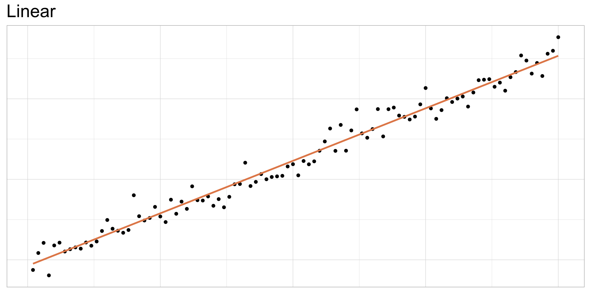

Language of models
ENST/MRNE 222 Environmental Data Analysis and Visualization
Paris art auction

Data was scraped from auction catalog text

“Two paintings very rich in composition, of a beautiful execution, and whose merit is very remarkable, each 17 inches 3 lines high, 23 inches wide; the first, painted on wood, comes from the Cabinet of Madame la Comtesse de Verrue; it represents a departure for the hunt: it shows in the front a child on a white horse, a man who gives the horn to gather the dogs, a falconer and other figures nicely distributed across the width of the painting; two horses drinking from a fountain; on the right in the corner a lovely country house topped by a terrace, on which people are at the table, others who play instruments; trees and fabriques pleasantly enrich the background.”
Dataset contains numeric and categorical variables


Height vs. width
As width increases, height increases:

Height as a function of width
If we know a painting’s width, we can use the equation of the line to calculate the expected height value for a given width.

Use geom_smooth(method = "lm") to draw a straight line through your data

- The gray shading above and below the line represent the confidence interval (CI): the range of values within which the predicted values of y (height) are expected to lie.
- by default,
geom_smooth()uses a 95% CI: 95% percent chance that the actual height is within the range of predicted values in the interval
Residuals visualized

ht_wt_fit <- linear_reg() |>
fit(height_in ~ width_in, data = pp)
ht_wt_fit_tidy <- tidy(ht_wt_fit$fit)
ht_wt_fit_aug <- augment(ht_wt_fit$fit) |>
mutate(res_cat = ifelse(.resid > 0, TRUE, FALSE))
ggplot(data = ht_wt_fit_aug) +
geom_point(aes(x = width_in, y = height_in, color = res_cat)) +
geom_line(aes(x = width_in, y = .fitted), size = 0.75, color = "#8E2C90") +
labs(
title = "Height vs. width of paintings",
subtitle = "Paris auctions, 1764 - 1780",
x = "Width (in)",
y = "Height (in)"
) +
guides(color = FALSE) +
scale_color_manual(values = c("#260b27", "#e6b0e7")) +
annotate("text", x = 0, y = 150, label = "Positive residual", color = "#e6b0e7", hjust = 0, size = 8) +
annotate("text", x = 150, y = 25, label = "Negative residual", color = "#260b27", hjust = 0, size = 8)Slopes vs. differences
Slope: Two numeric variables; for every unit change in x, y changes by … units (the slope gives us …)